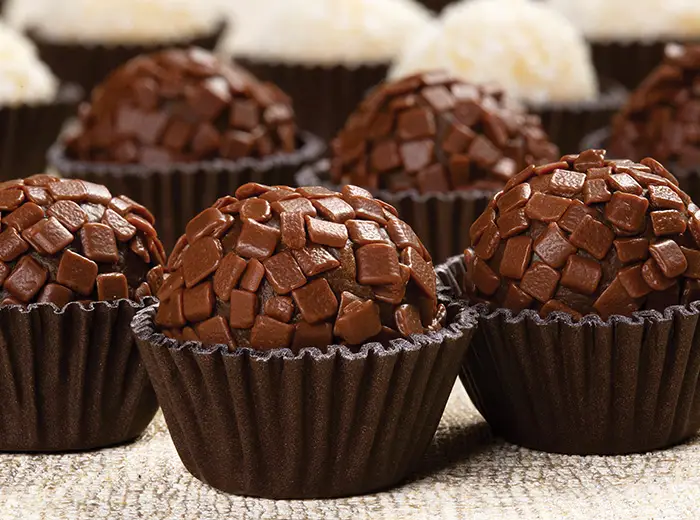

Bolo de Chocolate
Uma receita clássica e irresistível de bolo de chocolate com cobertura cremosa. Perfeita para todas as ocasiões.
Ingredientes e modo de preparo:
- 2 xícaras de farinha de trigo
- 1 xícara de açúcar
- 1/2 xícara de cacau em pó
- 1 xícara de leite
- 3 ovos
- 1/2 xícara de manteiga
- Preaqueça o forno a 180°C.
- Em uma tigela, misture a farinha, o açúcar e o cacau.
- Adicione os ovos, o leite e a manteiga derretida, e misture até obter uma massa homogênea.
- Despeje a massa em uma forma untada e enfarinhada.
- Asse por cerca de 30-35 minutos ou até que um palito inserido no centro saia limpo.
- Deixe esfriar antes de desenformar e cubra com sua cobertura favorita.

Pudim de Leite Condensado
Uma sobremesa cremosa e fácil de fazer, com calda de caramelo que derrete na boca.
Ingredientes e modo de preparo:
- 1 lata de leite condensado
- 2 latas de leite (use a lata de leite condensado como medida)
- 3 ovos
- 1 xícara de açúcar (para a calda)
- Comece fazendo a calda: derreta o açúcar em uma panela até que fique dourado.
- Despeje a calda em uma forma de pudim, espalhando bem.
- No liquidificador, bata o leite condensado, o leite e os ovos até ficar homogêneo.
- Despeje a mistura na forma caramelizada.
- Asse em banho-maria no forno preaquecido a 180°C por aproximadamente 1 hora.
- Deixe esfriar e desenforme.
Torta de Morango
Deliciosa torta com massa crocante e recheio de creme, coberta com morangos frescos.
Ingredientes e modo de preparo:
- 1 pacote de bolacha de maisena
- 1/2 xícara de manteiga derretida
- 1 lata de leite condensado
- 1 lata de creme de leite
- 1 pacote de gelatina sabor morango
- 300g de morangos frescos
- Em uma forma, triture as bolachas e misture com a manteiga derretida, formando a base da torta.
- Pressione bem e leve à geladeira por 30 minutos.
- Em uma tigela, misture o leite condensado, o creme de leite e a gelatina dissolvida.
- Despeje sobre a base da bolacha e leve à geladeira até firmar.
- Antes de servir, decore com morangos frescos fatiados.

Brigadeiro
Um docinho brasileiro feito de chocolate e leite condensado, enrolado e coberto com granulado.
Ingredientes e modo de preparo:
- 1 lata de leite condensado
- 1 colher de sopa de manteiga
- 1/2 xícara de achocolatado em pó
- Granulado para cobrir
- Em uma panela, misture o leite condensado, a manteiga e o achocolatado.
- Cozinhe em fogo baixo, mexendo sempre, até desgrudar do fundo da panela.
- Despeje em um prato untado e deixe esfriar.
- Com as mãos untadas, modele em bolinhas e passe no granulado.

Cupcake de Baunilha
Cupcakes fofinhos e saborosos de baunilha com cobertura de buttercream.
Ingredientes e modo de preparo:
- 1 e 1/2 xícaras de farinha de trigo
- 1 xícara de açúcar
- 1/2 xícara de manteiga em temperatura ambiente
- 2 ovos
- 1/2 xícara de leite
- 1 colher de sopa de fermento em pó
- 1 colher de chá de essência de baunilha
- Preaqueça o forno a 180°C e prepare uma forma para cupcakes com forminhas.
- Em uma tigela, bata a manteiga e o açúcar até ficar cremoso.
- Adicione os ovos, o leite e a essência de baunilha, e misture bem.
- Incorpore a farinha e o fermento até formar uma massa homogênea.
- Distribua a massa nas forminhas e asse por 20-25 minutos.
- Deixe esfriar antes de cobrir com buttercream.

Mousse de Maracujá
Uma mousse refrescante e leve de maracujá, perfeita para dias quentes.
Ingredientes e modo de preparo:
- 1 lata de leite condensado
- 1 lata de creme de leite
- 1/2 xícara de suco de maracujá
- 1/2 pacote de gelatina em pó sem sabor
- 1/4 de xícara de água (para dissolver a gelatina)
- Dissolva a gelatina na água quente e reserve.
- No liquidificador, bata o leite condensado, o creme de leite e o suco de maracujá.
- Adicione a gelatina dissolvida e bata novamente.
- Despeje em taças e leve à geladeira por pelo menos 4 horas antes de servir.